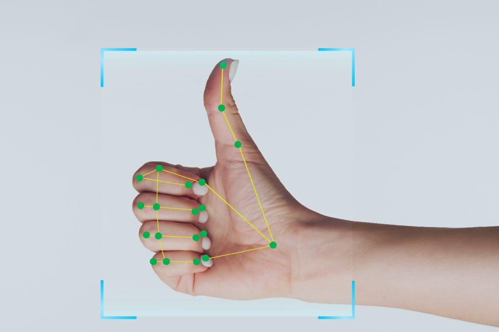
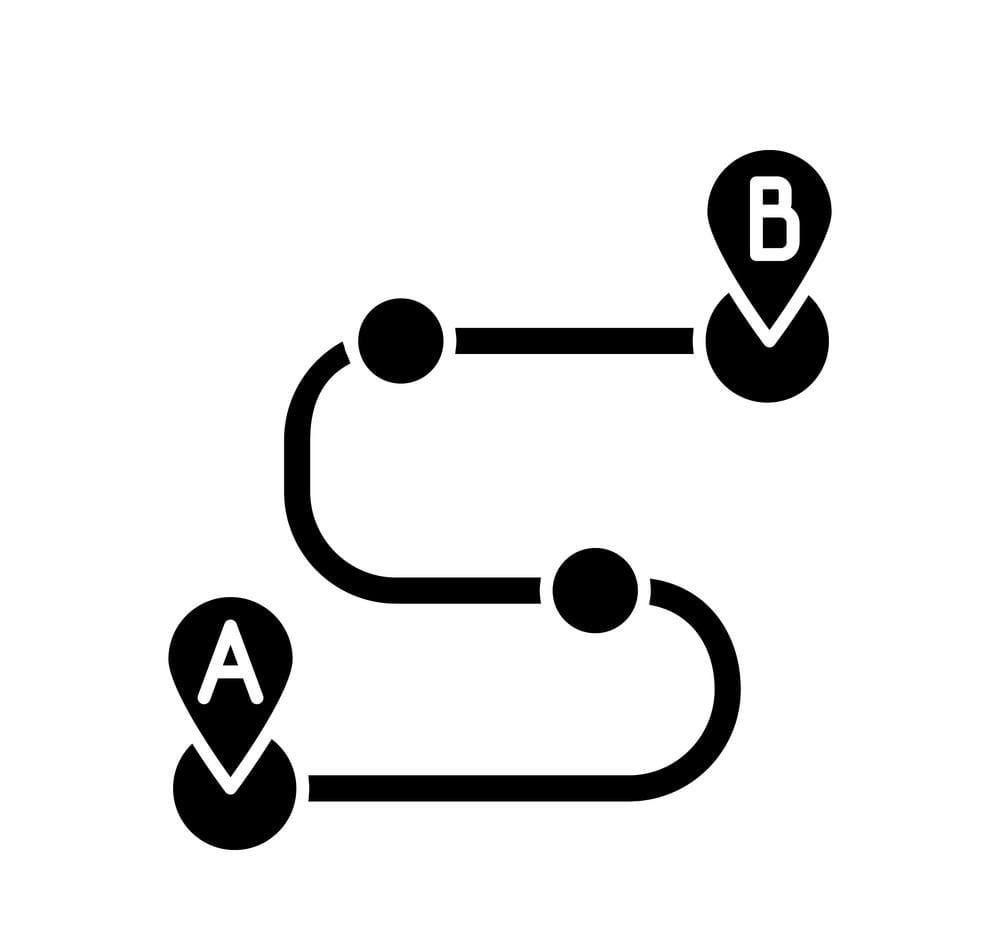

Gesture Recognition
Use advanced computer vision to recognize specific gestures. Employs computer vision techniques to recognize and interpret specific user gestures or movements, enhancing the app’s interactivity and functionality.
Safe Route Planning
Get suggestions for the safest routes based on real-time data. Integrates mapping and navigation technologies to suggest the safest routes for users based on real-time data and historical incident information.
Wearable Device Integration
Connect with wearables for additional safety features and monitoring. Syncs with wearables to provide additional safety features and real-time monitoring.